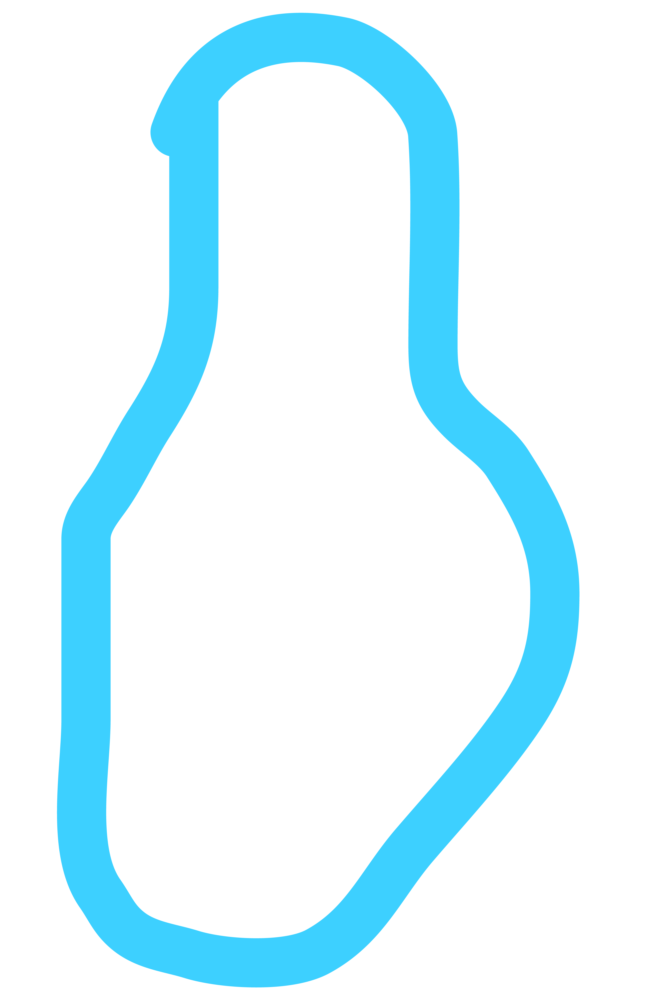

Josh Lucas
Cher's former step-brother is ambitious and socially conscious, and he hopes to become an environmental lawyer. He is presented as a bleeding-heart liberal, listening to alternative rock, keeping up-to-date on the news, and unconcerned with superficialities. As Dionne puts it, Josh is in his "post-adolescent idealistic phase." Outwardly, he seems to consider Cher frivolous and selfish, but as the film progresses he reveals a more protective side and demonstrates caring and concern for her. Josh is a foil for Cher, and also her perfect complement.
 Characters
Characters